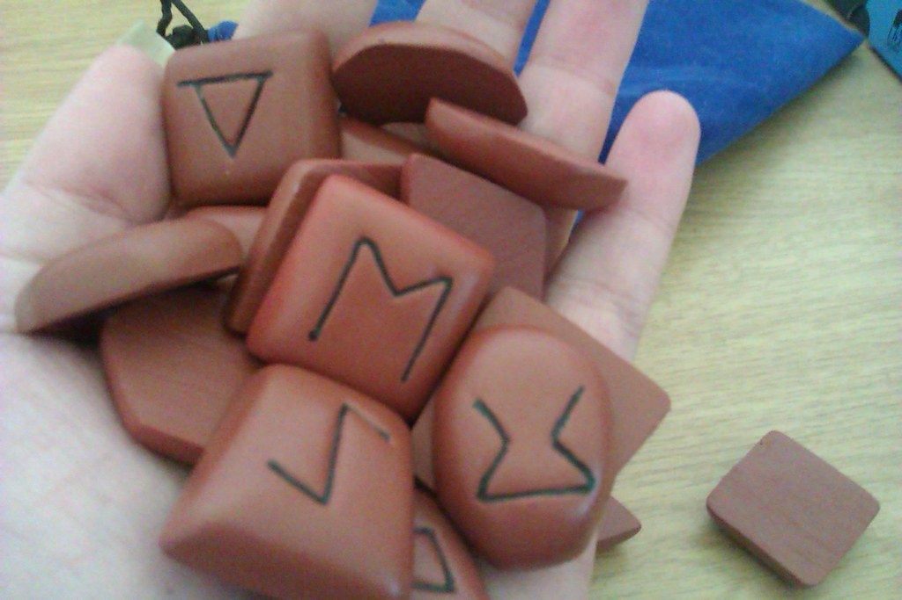

บทนำ
หมวดดูดาวเป็นหมวดที่เต็มไปด้วยความน่าสนใจและข้อมูลที่น่าตื่นเต้น เป็นหมวดที่เกี่ยวข้องกับการสังเกตและการศึกษาเกี่ยวกับวัตถุในอวกาศ เช่น ดาวฤกษ์ ดาวเคราะห์ และดาวเทียม การดูดาวไม่เพียงแต่เป็นงานอดิเรกที่สนุกสนาน แต่ยังมีความสำคัญทางวิทยาศาสตร์และประวัติศาสตร์ที่น่าทึ่ง
การดูดาวมีบทบาทสำคัญในการพัฒนาความรู้ของมนุษย์ตั้งแต่อดีต นักดาราศาสตร์ในยุคโบราณใช้การสังเกตการณ์เพื่อทำความเข้าใจเกี่ยวกับจักรวาลและสร้างตำนานต่างๆ เกี่ยวกับดาวเคราะห์และดาวฤกษ์ การค้นพบและการศึกษาเกี่ยวกับดวงดาวช่วยให้มนุษย์ได้รู้จักลักษณะของโลกและสิ่งที่อยู่รอบๆ ตัวเรา
ในปัจจุบัน การดูดาวเป็นหนึ่งในวิธีการที่สำคัญในการสำรวจอวกาศ นักดาราศาสตร์ยังคงใช้การสังเกตการณ์เพื่อค้นหาดาวเคราะห์น้อย ดาวหาง และกาแล็กซีใหม่ๆ เพื่อให้เราได้รู้จักกับจักรวาลที่กว้างใหญ่และซับซ้อนนี้มากขึ้น
สุดท้ายนี้ หมวดดูดาวเป็นแหล่งข้อมูลที่สำคัญสำหรับผู้ที่สนใจในเรื่องราวของอวกาศ ไม่ว่าจะเป็นการดูด้วยตาเปล่าหรือผ่านกล้องโทรทรรศน์ การเรียนรู้เกี่ยวกับวัตถุในอวกาศสามารถช่วยให้เราเข้าใจถึงความมหัศจรรย์ของจักรวาลและท้าทายให้เราตั้งคำถามเกี่ยวกับที่มาที่ไปของชีวิตและการดำรงอยู่ของมนุษย์ในโลกนี้
วิธีการเริ่มต้นดูดาว
การดูดาวเป็นกิจกรรมที่น่าตื่นเต้นและสร้างแรงบันดาลใจให้กับผู้คนทั่วโลก มันไม่เพียงแต่เป็นการสำรวจอวกาศ แต่ยังเป็นการเชื่อมโยงเราเข้ากับความมหัศจรรย์ของจักรวาล ในบทความนี้เราจะแนะนำวิธีการเริ่มต้นดูดาวสำหรับผู้ที่สนใจ เริ่มจากการเลือกสถานที่ที่เหมาะสมและอุปกรณ์ที่จำเป็น
การเรียนรู้เกี่ยวกับวัตถุในอวกาศสามารถทำได้ด้วยตาเปล่าหรือผ่านกล้องโทรทรรศน์ หากคุณต้องการดูดาวด้วยตาเปล่าคุณควรเลือกสถานที่ที่มืดและห่างไกลจากแสงไฟ เพื่อให้คุณสามารถมองเห็นดาวได้ชัดเจนขึ้น ถ้าต้องการใช้กล้องโทรทรรศน์ ควรเลือกอุปกรณ์ที่เหมาะสมกับระดับความชำนาญของคุณ เช่น กล้องโทรทรรศน์แบบสะท้อนแสงหรือกล้องโทรทรรศน์แบบหักเหแสง
เมื่อคุณมีอุปกรณ์ที่จำเป็นแล้ว ขั้นตอนถัดไปคือการศึกษาเกี่ยวกับวัตถุในอวกาศ เช่น ดาวเคราะห์ ดวงจันทร์ หรือกาแล็กซี ควรเริ่มต้นจากดาวที่สามารถมองเห็นได้ง่ายในช่วงเวลากลางคืน เช่น ดาวอังคารหรือดวงจันทร์ การศึกษาเกี่ยวกับดาวเหล่านี้จะช่วยให้คุณเข้าใจถึงความมหัศจรรย์ของจักรวาลและกระตุ้นให้คุณตั้งคำถามเกี่ยวกับที่มาที่ไปของชีวิตและการดำรงอยู่ของมนุษย์
การดูดาวไม่เพียงแต่เป็นการเรียนรู้ แต่ยังเป็นกิจกรรมที่สามารถทำร่วมกับครอบครัวและเพื่อนฝูง เพื่อสร้างความทรงจำที่น่าประทับใจ และทำให้คุณรู้สึกถึงความเชื่อมโยงกับจักรวาลอันยิ่งใหญ่ การดูดาวไม่ใช่แค่กิจกรรม แต่เป็นประสบการณ์ที่สามารถเปลี่ยนแปลงมุมมองของคุณต่อชีวิตและโลกใบนี้

ข้อดีของการดูดาว
การดูดาวเป็นกิจกรรมที่น่าสนใจและสามารถสร้างความสุขให้กับเราได้มากมาย นอกจากจะช่วยให้เราสามารถมองเห็นท้องฟ้าและดาวต่างๆ แล้ว การดูดาวยังมีประโยชน์และข้อดีอีกหลายอย่าง ซึ่งเราจะพาไปสำรวจกันในบทความนี้
หนึ่งในข้อดีของการดูดาวคือช่วยให้เรารู้สึกถึงความเชื่อมโยงกับจักรวาล การได้มองเห็นดาวและอวกาศทำให้เรารู้สึกถึงความยิ่งใหญ่และความน่าประทับใจของโลกใบนี้ นอกจากนี้ การดูดาวยังสามารถช่วยให้เรารู้จักกับเพื่อนใหม่ๆ และสร้างความทรงจำที่มีค่า ไม่ว่าจะเป็นการไปดูดาวกับครอบครัวหรือเพื่อนฝูง
การดูดาวยังมีประโยชน์ต่อการพัฒนาทักษะทางสายตาและการคิดวิเคราะห์ การได้มองหาดาวและวัตถุท้องฟ้าอื่นๆ จะช่วยให้เรามีความสามารถในการมองเห็นและจดจำรูปทรงและสีสันได้ดีขึ้น นอกจากนี้ยังช่วยกระตุ้นความคิดสร้างสรรค์และการคิดวิเคราะห์ เพื่อหาคำตอบเกี่ยวกับสิ่งที่เราเห็น
สุดท้ายนี้ การดูดาวยังเป็นการพักผ่อนที่ดีสำหรับจิตใจและร่างกาย การได้อยู่ในธรรมชาติและมองเห็นท้องฟ้าที่เต็มไปด้วยดาวช่วยให้เรารู้สึกสงบและสบายใจ นอกจากนี้ ยังสามารถช่วยลดความเครียดและเพิ่มพลังงานให้กับเราได้อีกด้วย
การดูดาวจึงไม่ใช่แค่กิจกรรมที่น่าสนใจ แต่ยังมีประโยชน์และข้อดีอีกมากมาย ที่จะทำให้เรารู้สึกถึงความเชื่อมโยงกับจักรวาล และช่วยให้ชีวิตของเรามีความหมายมากยิ่งขึ้น
FAQs
การดูดาวเป็นกิจกรรมที่น่าสนใจและสามารถสร้างความเชื่อมโยงกับจักรวาลได้อย่างลึกซึ้ง การมองขึ้นไปบนฟ้าและเห็นดาวทำให้เรารู้สึกถึงความยิ่งใหญ่ของธรรมชาติ และช่วยให้ชีวิตของเรามีความหมายมากยิ่งขึ้น ในบทความนี้ เราจะพูดถึงคำถามที่พบบ่อยเกี่ยวกับการดูดาว และประโยชน์ที่มีต่อเรา
หนึ่งในคำถามที่พบบ่อยคือ "การดูดาวช่วยให้เรารู้สึกเชื่อมโยงกับจักรวาลได้อย่างไร?" การดูดาวทำให้เราสามารถเห็นและเข้าใจความยิ่งใหญ่ของจักรวาล ซึ่งช่วยให้เราเห็นคุณค่าของตัวเองในชีวิต และรู้สึกถึงความเชื่อมโยงกับสิ่งที่อยู่รอบตัวเรา นอกจากนี้ การดูดาวยังช่วยให้เรารู้สึกสงบและผ่อนคลายเมื่อเผชิญกับความเครียดในชีวิตประจำวัน
นอกจากนี้ การดูดาวยังมีประโยชน์ต่อสุขภาพจิตของเราอีกด้วย เมื่อเรามองขึ้นไปบนฟ้าและเห็นดาว เราจะรู้สึกถึงความสงบและการผ่อนคลาย ซึ่งช่วยให้เราสามารถหลีกเลี่ยงความเครียดและวิตกกังวลได้ นอกจากนี้ การดูดาวยังช่วยให้เรามีความคิดสร้างสรรค์และมองโลกในแง่ดีมากขึ้น
การดูดาวจึงไม่ใช่แค่กิจกรรมที่น่าสนใจ แต่ยังมีประโยชน์และข้อดีอีกมากมาย ที่จะทำให้เรารู้สึกถึงความเชื่อมโยงกับจักรวาล และช่วยให้ชีวิตของเรามีความหมายมากยิ่งขึ้น

บทสรุป
การดูดาวเป็นกิจกรรมที่ไม่เพียงแต่น่าสนใจและสร้างความสุขให้กับผู้คน แต่ยังมีประโยชน์และข้อดีอีกมากมายที่สามารถช่วยให้เรารู้สึกถึงความเชื่อมโยงกับจักรวาล และทำให้ชีวิตของเรามีความหมายมากยิ่งขึ้น เมื่อเรามองไปยังฟ้าในคืนที่มืดมิด เราจะเห็นดาวที่ส่องสว่างอยู่บนผืนฟ้า ซึ่งไม่เพียงแต่เป็นสัญลักษณ์ของความฝัน แต่ยังเป็นแรงบันดาลใจให้เราสำรวจและค้นหาความรู้เกี่ยวกับจักรวาลที่กว้างใหญ่
การดูดาวยังช่วยให้เราได้เรียนรู้เกี่ยวกับการทำงานของระบบสุริยะ และความมหัศจรรย์ของโลกใบนี้ ไม่ว่าจะเป็นดาวฤกษ์ ดาวเคราะห์ หรือแม้กระทั่งหลุมดำ เราสามารถศึกษาและเข้าใจถึงโครงสร้างและสภาพแวดล้อมที่แตกต่างกันในจักรวาล นอกจากนี้ การดูดาวยังช่วยให้เราได้ผ่อนคลายจากความเครียดในชีวิตประจำวัน และเปิดโอกาสให้เราค้นพบความรักในธรรมชาติ
สุดท้ายนี้ การดูดาวไม่ใช่เพียงแค่กิจกรรมที่น่าสนใจ แต่ยังเป็นการสร้างแรงบันดาลใจและเชื่อมโยงกับจักรวาล ที่จะทำให้ชีวิตของเรามีความหมายมากยิ่งขึ้น ดังนั้น มาร่วมกันสร้างความสุขจากการดูดาว และค้นพบความมหัศจรรย์ของจักรวาลที่ไม่มีที่สิ้นสุดกันเถอะ